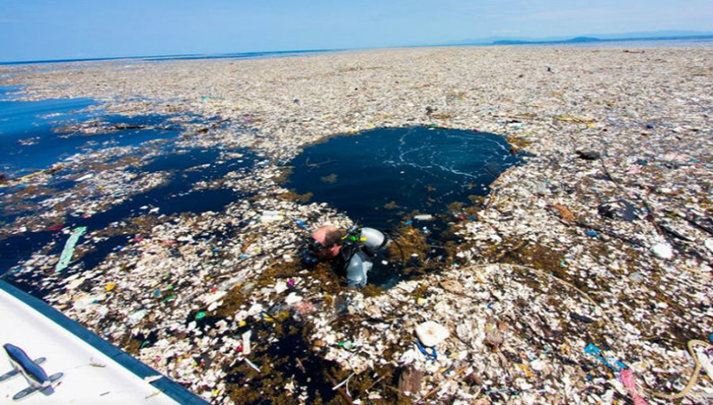

Tout comme les Atlantes, les hommes polluent les mers et océans du monde. En 2019 on compte environ 6.5 millions de tonnes de déchets plastiques déversés dans les océans.
Un problème qui devient un fléau pour la faune aquatique et pour la planète entière.
Le septième continent, un continent de plastique
Les débris flottant dans les océans et les mers sont détruits par des micro-organismes marins. Mais l’arrivée du plastique change ceci. Les déchets déversés par l’homme hors des terres sont constitués à 90% de plastiques. Lorsqu’il n’est pas détruit, le plastique émerge à la surface.
Photo du 7ème continent
Le septième continent ou continent de plastique est une vaste masse de déchets qui occupe 1,6 millions de km², dans l’océan Pacifique. À mi-chemin entre la Californie et Hawaï, il contiendrait 80 000 tonnes de déchets d’après les scientifiques. Une masse de plastique ayant une superficie trois fois plus grande que la France.
Une autre masse de déchets d’une superficie beaucoup moins importante a été détecté en 2019 en Méditerranée. L’expédition Méditerranée en danger (MED) a estimé 115 000 déchets par km².
Photo d’une plage de la mer Méditerranée.
Les micro-déchets, un polluant
L’eau, qu’elle soit salée ou non, contient en effet une grande variété de micro-organismes (bactéries, algues, etc.) aptes à éliminer progressivement ces matières
Des égouts sous la mer, Henry Augier.
Photo de micro-déchets dans l’océan
Les débris détruits par les micro-organismes et la mer n’ont pas pour autant disparu.
Ces micro-débris sont invisibles en surface et en profondeur ne cessent de se répandre et de polluer l’ensemble des océans. Ces derniers ne sont pas sans danger.
Les dangers du plastique
Le plastique est donc une menace pour les êtres vivants. Des associations ont déterminé que chaque année environ 100 000 mammifères marins et 1 million d’oiseaux meurent d’étranglement ou d’étouffement. Plus de 600 espèces sont concernées par cette mortalité. Les oiseaux se nourrissent de débris et de plastiques tandis que les tortues les confondent avec des méduses.
De plus, le plasque affecte des autres espèces d’une
manière différente. Les cétacés et les mollusques, qui
filtrent l’eau, ingèrent des quantités importantes de
micro plastiques et de micro déchets. L’ingestion de
micro-déchets concerne aussi l’ensemble des petits
poissons et plancton. Cette contamination ne concerne
heureusement que 0,01 % des poissons vendus dans le
commerce.
Or les déchets dans nos océans sont à l’origine de
contaminaon des eaux, mais les mesures prélevées ne
sont pas assez importantes pour parler de toxicité de
l’eau
Le réel danger concerne davantage les organismes qui
filtrent l’eau des mers et océans, ainsi que les espèces
qui meurent d’étouffement.

Aquaman
Les solutions